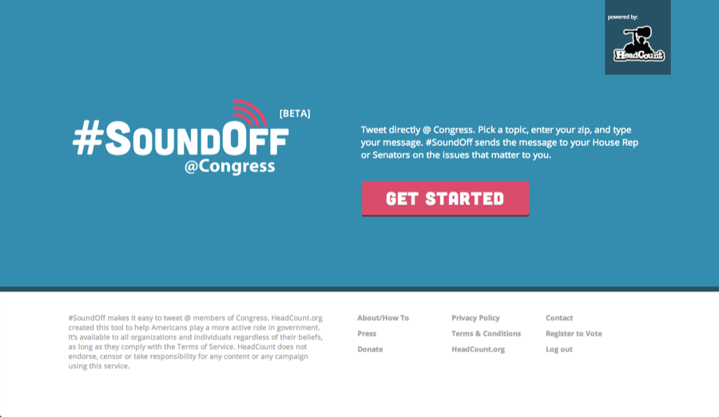
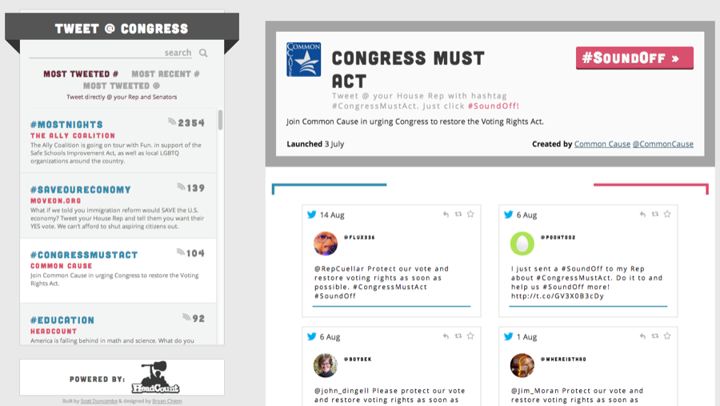
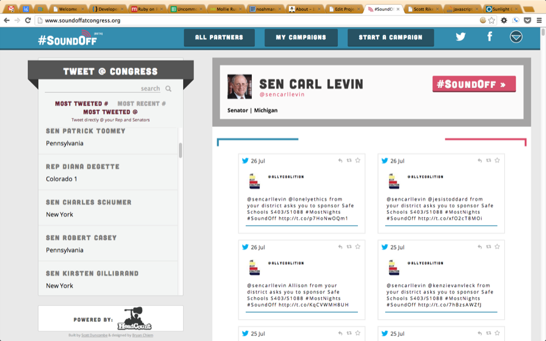
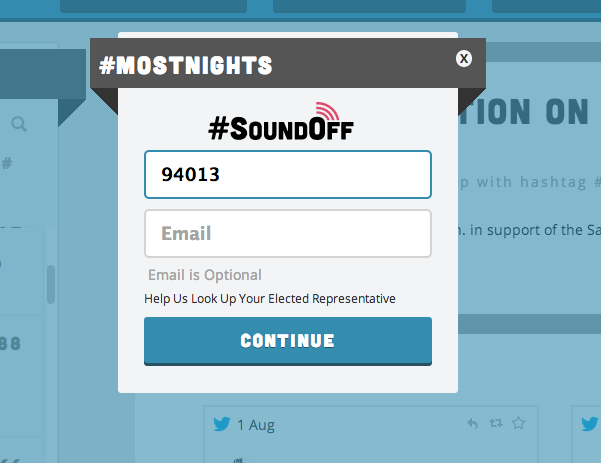
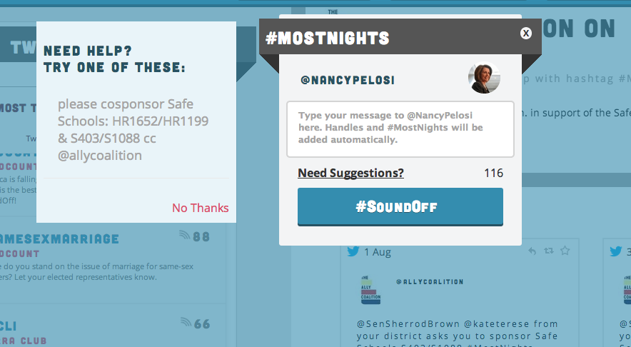
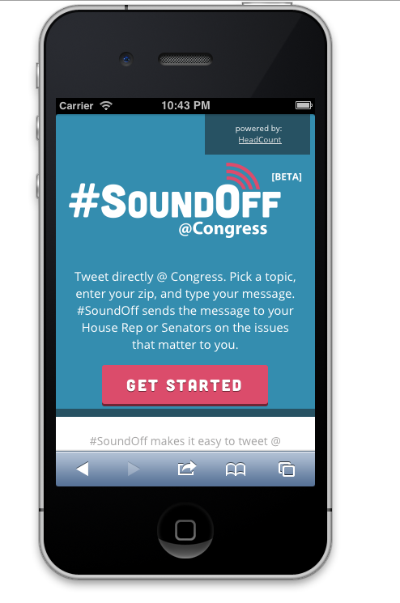
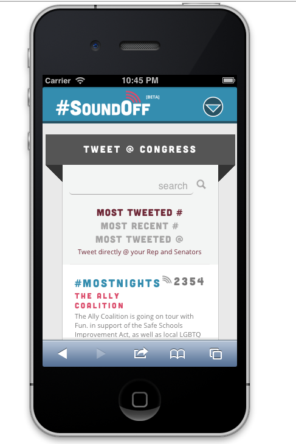
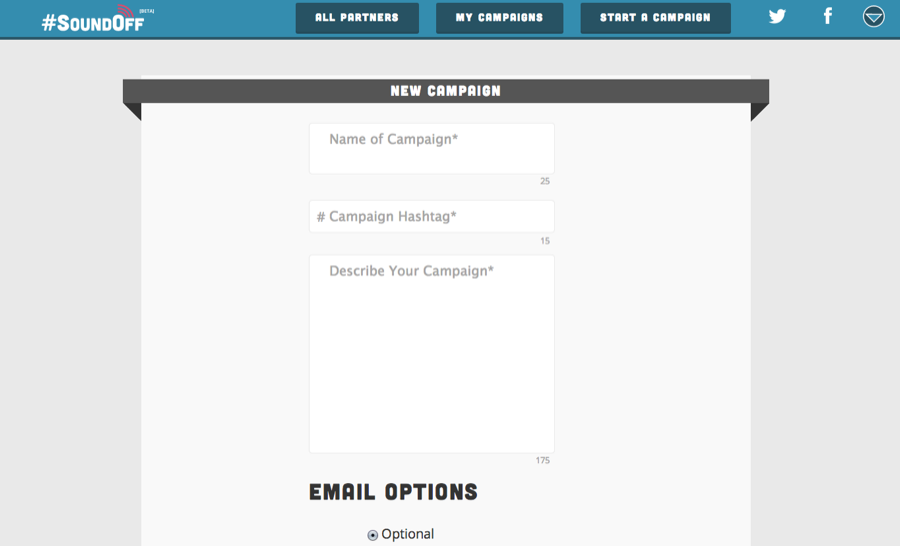

Specimen Nº 17 · Habitat III — The early internet & client work
#SoundOff @ Congress
Making it easy to tweet at elected officials, developed for HeadCount.org.
- First observed
- 2013
- Diet
- Twitter Streaming API
#SoundOff is set up to allow users to browse campaigns created by partner organizations. When they're inspired by a campaign, #SoundOff makes it easy to look up their elected officials using their zip code, and then tweet @ them with the campaign's hashtag. Tweets and responses are collected by #SoundOff to track the campaign's success.
Fully optimized for mobile and tablets - will utilize the official Twitter App if already installed on the device. Also includes an embeddable widget to allow partners to showcase their campaigns on their site and allow visitors to take action.
Built with Ruby on Rails and Angular JS - #SoundOff utilizes the Open Congress API and the Google Maps API to match users with their congresspeople. Tweets are aggregated using Twitter's Streaming API. Stylesheets were written in SASS with HAML templating.
Plates · from the field








Field notes